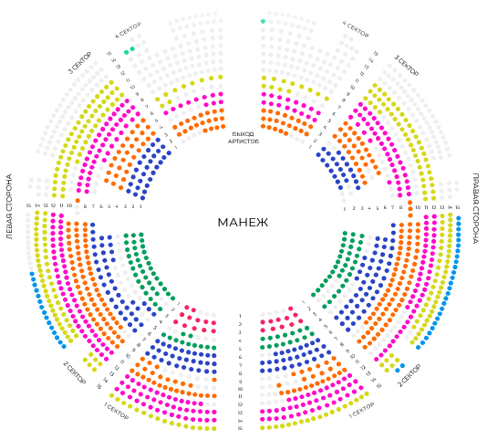

Опоздавший Зритель может войти в зал с разрешения дежурного Администратора, если это не создаст помех показу представления и зрителям в зале.
ОПИСАНИЕ ПРЕДСТАВЛЕНИЯ
Яркое событие этой осени ждет Вас в цирке Автово, с 1 сентября.
Новая программа - «Арена чудес» подарит заряд позитивных эмоций и хорошего настроения.
Вас ждет настоящий карнавал из потрясающих номеров:
- Милые и пушистые чау-чау панды впервые на манеже цирка в Автово под руководством Владислава Паршина
- Легкая и грациозная, воздушная гимнастка Сабина Алиева.
- Удивительная акробатика на верблюдах под руководством Синдбада Ташкенбаева.
- Феноменальные чудеса баланса в исполнении Артура Геворкяна.
- Сложнейшая гимнастика на ремнях в исполнении Душакановой Ирины.
0+
Схема зала
Продолжительность:
2ч 30мин с антрактом
КУПИТЬ БИЛЕТЫ
23
ноября
суббота
24
ноября
воскресенье
30
ноября
суббота


Часто задаваемые вопросы
Можно ли зайти в цирк в случае опоздания и как это сделать?
Можно ли фотографировать в цирке, где и когда?
Фотографировать в цирке можно. В зрительном зале фотографировать можно без вспышки.
Есть ли специальные детские билеты, когда цена уменьшена?
Детских билетов не предусмотрено.
Есть ли скидка на семью?
Скидок не предусмотрено
Есть ли ещё какой-то способ получить скидку?
Как только мы запустим программу лояльности, информация будет опубликована на нашем сайте.
Есть ли продажа билетов онлайн?
Продажа билетов в режиме реального времени осуществляется на сайте Цирка. Продажа билетов на сайте цирка останавливается в день представления, за 1 час до начала.
Какие есть виды и способы оплаты билетов?
Зритель может приобрести билеты на мероприятия Цирка одним из следующих способов: • в кассах Цирка оплатить билеты наличными и банковской картой; • на официальном сайте Цирка – можно оплатить банковской картой; • у официальных распространителей.
В каких случаях можно вернуть билеты?
Возврату и обмену подлежат билеты, приобретенные только в кассе, на официальном сайте Цирка, в обособленном подразделении, а также у официальных распространителей. Возврат билетов по инициативе Зрителя, включая возврат билетов по вине Зрителя, производится не позднее 1 (Одних) суток до начала мероприятия. По истечении указанного времени билеты не принимаются, денежные средства не возвращаются. В случаях замены, отмены или переноса мероприятия стоимость сдаваемых билетов возмещается Зрителю полностью. При этом билеты принимаются в следующие сроки: • при замене мероприятия – с момента официального оповещения о замене мероприятия, но не позднее, чем за сутки до начала заменяющего мероприятия, не позднее 10 суток со дня отмененного мероприятия. указанного в билете; • при переносе мероприятия – с момента официального оповещения о переносе мероприятия, но не позднее, чем за сутки до начала перенесенного мероприятия; • при отмене мероприятия – с момента официального оповещения об отмене мероприятия, но не позднее 10 суток со дня отмененного мероприятия, указанного в билете.
Можно ли не распечатывать электронный билет?
Да, можно. Вы можете предъявить билет на любом электронном носителе.